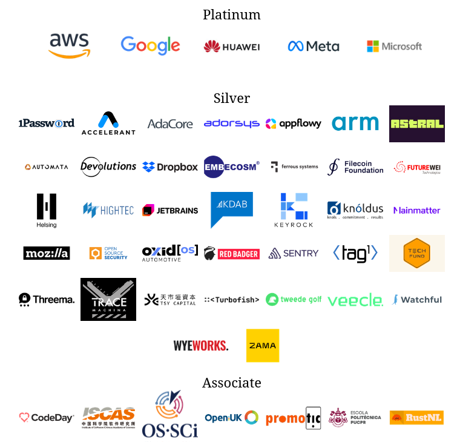
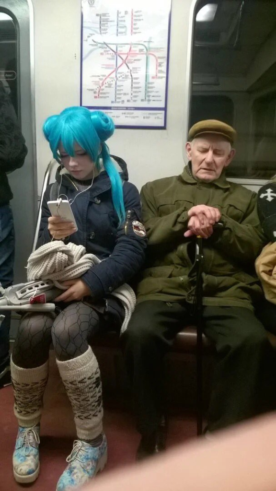

Rust e o Kernel do Linux
Resumo da situação
-
Nas últimas semanas se intensificou um conflito latente na comunidade de desenvolvimento do Linux. Existe uma divergência quanto ao uso de Rust no código do Linux, tradicionalmente todo feito na linguagem C
-
O estopim que trouxe as tensões à tona foi a resposta de Christoph Hellwig à adição de bindings em Rust para o módulo DMA ao qual ele é o mantenedor.
So we'll have these bindings creep everywhere like a cancer and are very quickly moving from a software project that allows for and strives for global changes that improve the overall project to increasing compartmentalization
-
É uma situação que tem diversas 'camadas' para interpretar e muitos personagens e egos diferentes em conflito. É uma 'guerra fria' que já se arrasta desde meados de 2020 quando o projeto Rust For Linux
Um pouco sobre Rust / Fundação Rust e suas 'polêmicas'
Rust é uma linguagem de programação de propósito geral que enfatiza desempenho, segurança de tipos e concorrência. Ele reforça a segurança de memória, o que significa que todas as referências apontam para uma memória válida. Ele faz isso sem um coletor de lixo convencional; em vez disso, erros de segurança de memória e disputas de dados são evitados pelo "verificador de empréstimo", que rastreia o tempo de vida útil das referências do objeto em tempo de compilação.
Por que usar Rust?
Rápido histórico
- Criada em 2006 por Graydon Hoare como um projeto pessoal e a partir de 2009 adotada como um projeto da Mozilla que viu potencial em criar uma engine de browser mais segura e eficiente com a linguagem.
- A partir de 2013 o Graydon Hoare se afastou do projeto e se formou um 'core team' de 6 pessoas inicialmente, diversos sub grupos e desenvolvimento baseado em RFCs
- A versão 1.0 da linguagem foi lançada em 15/05/2015 e com ela já começou a surgir uma comunidade
- Rust foi instrumental para o projeto Servo (e vice versa) da Mozilla que visava construir uma engine web moderna e teve seu primeiro lançamento em 2016
- Em 2020 a Mozilla demitiu 250 (1/4) de seus funcionários e deu sinais de abandonar o Servo o que colocou em cheque também o futuro da Rust e em 2021 o time da linguagem criou a Rust Foundation para ser dona dos domínios, marcas registradas relevantes além de financiar o projeto.

- Em 2021 a equipe de moderação da comunidade Rust rompeu com o projeto "em protesto contra a Equipe Central que se coloca como alguém que não presta contas a ninguém além de si mesma", o que levou a uma reforma da governância do projeto e da fundação em 2022
- Em 06/04/2023 a fundação Rust sofreu represálias da comunidade pela proposta de uma política de marca registrada que incluía regras demasiado restritivas para o uso do nome da linguagem e de seu logo.
- Em 26/02/2024 a Casa Branca lançou um relatório pedindo que o desenvolvimento de software use linguagens mais memory-safe. Também lembrar do projeto TRACTOR do exército dos EUA
O projeto Rust for Linux
- O Linux é um sistema operacional e o papel de um SO é permitir uma camada de abstração entre o software e o hardware de um computador. É aqui ficam os drivers, gerenciamento de processos, de memória, sistemas de arquivos e mais
- A discussão de evoluir o código do Linux para outra linguagem é quase tão antiga quanto o kernel do Linux. Pórem existe um bom argumento para o Rust hoje e não sou só eu que concordo. Segundo Greg Kroah-Hartman
Como alguém que viu quase TODAS as correções de bugs e problemas de segurança do kernel nos últimos 15+ anos ... e que vê TODAS as CVEs do kernel emitidas, acho que posso falar sobre esse tópico.
A maioria dos bugs (quantidade, não qualidade/gravidade) que temos são devidos aos pequenos casos idiotas em C que desapareceram totalmente no Rust. Coisas como sobrescritas simples de memória (não que o Rust consiga pegar tudo isso de longe), limpezas de caminho de erro, esquecimento de verificar valores de erro e erros de uso após liberação. É por isso que quero ver o Rust entrar no kernel, esses tipos de problemas simplesmente desaparecem, permitindo que desenvolvedores e mantenedores tenham mais tempo para se concentrar nos bugs REAIS que acontecem (por exemplo, problemas de lógica, condições de corrida, etc.)
-
Desde meados de 2020 então já existe um projeto que se chama Rust for Linux que possui um plano de progressivamente incluir a possibilidade de adicionar partes escritas em Rust no Linux
-
Em 2022 os primeiros vestígios de Rust já estão dentro do Linux e o projeto conta com fincanciamento e o apoio do ditador benevolente Linus Torvalds
Ok, mas quem está certo?
- Existe uma preocupação legítima no que Cristoph Hellwig levantou
- A regra do 'você quebrou, você arruma'
- A regra do 'código deve ser útil'
- Porém Rust desde 2020 chegou para ser a exceção em prol de evoluir o kernel e a maneira como está sendo feita parece ser uma conciliação bastante pesada já
- Também existe uma outra camada: o conflito entre os dinossauros do kernel, tradicionais em sua programação C e esses novos jovens do Rust

- Cristoph Hellwig abandonou seu posto de mantenedor
- Hector Martin (do projeto Asahi Linux) deixou seu posto de mantenedor
- Karol Herbst mantenedor do Nouveau deixou seu posto de mantenedor
Resposta de Linus Torvalds
- Depois de alguns dias de flame wars o Linus apareceu, distribuiu coice para todos os lados e esclareceu o que se espera de cada mantenedor no kernel e deixou claro que vai ser preciso um pouco de boa vontade para o Rust for Linux ir para frente.
- Por que o Linus teria interesse de manter o Rust dentro do Kernel? Provavelmente é uma questão de relevância do futuro do Linux e o medo de inclusive perder o controle se algum outro projeto mais moderno se impuser
Conclusões
- Devemos nos lembrar que isso é política e que as decisões técnicas todo dia passam por esse tipo conflito. Elas se misturam
- Quem acha que isso tem a ver com a comunidade Rust exclusivamente claramente chegou no software aberto e livre ontém
- Não abdiquem dos seus cargos se vocês acreditam nos seus projetos. A luta também é para termos os melhores projetos tecnicamente.
Referências
https://www.phoronix.com/news/Hellwig-DMA-Helpers-Removed
https://www.phoronix.com/news/Torvalds-On-Rust-Maintainers
https://www.phoronix.com/news/Greg-KH-On-New-Rust-Code
https://www.phoronix.com/news/Torvalds-Override-On-Rust-Code